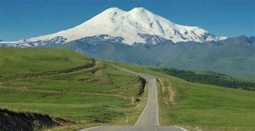
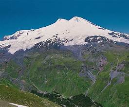
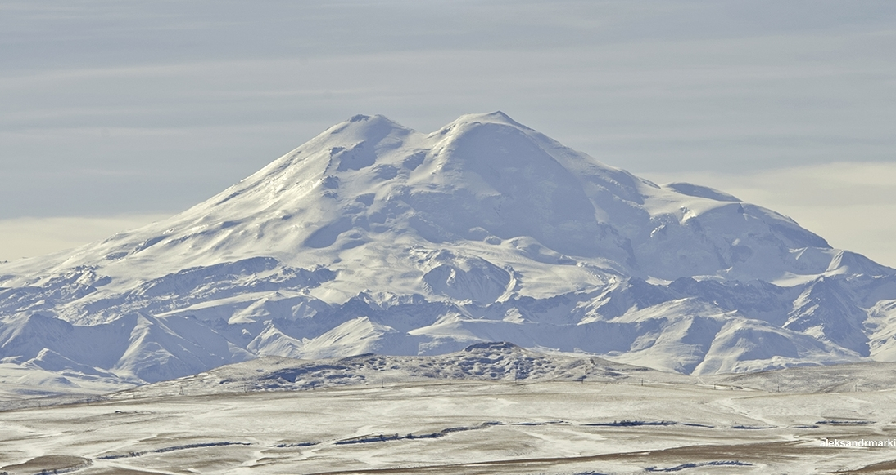
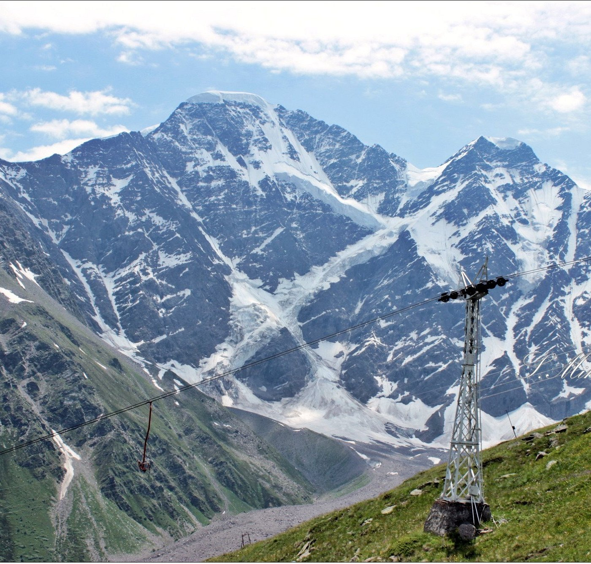
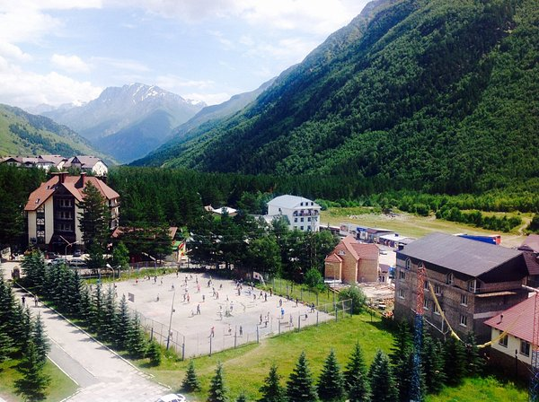

Mount Elbrus is the highest peak in Russia and all of Europe, rising 5,642 meters above sea level in the western Caucasus Mountains. A dormant stratovolcano with twin summits, it is one of the Seven Summits — the highest mountains on each continent — drawing mountaineers and adventurers from around the world.
Located in the Kabardino-Balkaria and Karachay-Cherkessia republics near the Georgian border, Elbrus is covered by 23 glaciers that feed rivers flowing into the Caspian and Black Seas. Its twin volcanic cones — the western summit at 5,642 m and eastern at 5,621 m — are separated by a saddle at 5,416 meters. Eternal snow and ice blanket the upper slopes year-round.
The standard southern route from the Azau base is considered one of the more accessible climbs among the Seven Summits, attracting thousands of mountaineers annually. Cable cars and ski lifts rise to the Garabashi station at 3,847 m, and the Diesel Hut refuge at 4,130 m serves as a base camp. Despite its accessibility, Elbrus demands respect — altitude sickness, sudden storms, and extreme cold claim lives every year.
The Elbrus ski resort is Russia's premier high-altitude winter destination, offering runs from 3,847 m down to 2,350 m with reliable snow from November through May. Paragliding, snowmobile tours, and ice climbing supplement the skiing experience. The surrounding Baksan Valley offers hot springs, traditional Balkar cuisine, and stunning alpine scenery for non-climbers.


